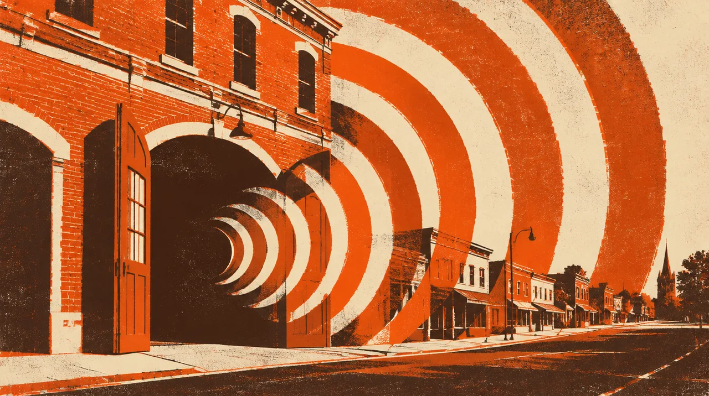

MUSIC · JUL 18 BIRTHDAY WEEKEND · 2027 · Boonton, New Jersey
FANG SPEARE · LIVE
An old firehouse. A new kind of thunder.
Date to come.
- When
- Jul 18 Birthday Weekend, 2027
- Where
- Maxfield Engine House · Live date and details to come, Boonton, New Jersey · Directions
- Light
- After dark
In the mix
Fang Speare LIVE, at the Boonton firehouse Foster’s family is reimagining. His birthday weekend in 2027, just before Shambhala. The exact live date and details are still to come.
Notes to the crew
Dig into the sound and story
5 short chapters. Open the ones that call to you.
THE OLD ROOMBuilt to bring a town together.
Maxfield Engine House was built in 1893 and completed by early 1894. Its plan held fire equipment below and civic meeting rooms above. Penn’s preservation study traces how that distinctive building could change while keeping its character.
THE MUSICAL LIFEThese walls have already held a song.
In 2013, Maxfield’s on Main opened in the restored firehouse with jazz, blues and rock programming. Fang Speare’s birthday chapter follows a real musical history. The room has welcomed different sounds before.
THE ROOM TODAYA place keeps finding its people.
The Center for the Study of Cities and Small Towns renewed the firehouse following a PennPraxis preservation study, with the Birch family involved in its civic and cultural life. Highlands art exhibitions in 2024 and 2025 brought painting, photography and sculpture into the room. Foster’s family project gives this next gathering a deeper setting.
THE BIRTHDAYA new room for his own sound.
Foster’s birthday is July 18. This live chapter belongs to his birthday weekend in 2027. The exact performance date and practical details are still to come.
THE NEXT ADVENTUREFrom the firehouse to the forest.
Then the Shambhala chapter begins: I meet Drake and Mel in Kelowna, and we go on together. Two very different places to share something that matters.
Same crew, other nights
Swipe the picture, or use the arrow keys, for the next night.